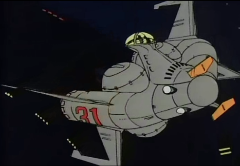

| Riah Republic Patrol Boat |
|
|  | |
General and Technical Data |
|
|
Unit Type: space patrol craft Operator: Riah Republic Propulsion system: 4x rocket thruster Hangar capacity: 1 cargo Launch catapults: 0 Fixed armaments: none Technical and Historical Notes Designed to quietly and accurately patrol the neutral zone of Side 6 airspace, the Riah Republic Patrol Boat is actually an impressively designed ship. While it carries no armament of its own, it has the most sophisticated and powerful sensor array of any ship of the One Year War, its video and still camera systems exceeding those of even the Duchy's Zaku II E. A strategically placed observation bridge allows for excellent visual surveillance. While not a military unit perse, the Riah Militia makes extensive use of this craft for scouting operations. However, it is still available to private investors. |